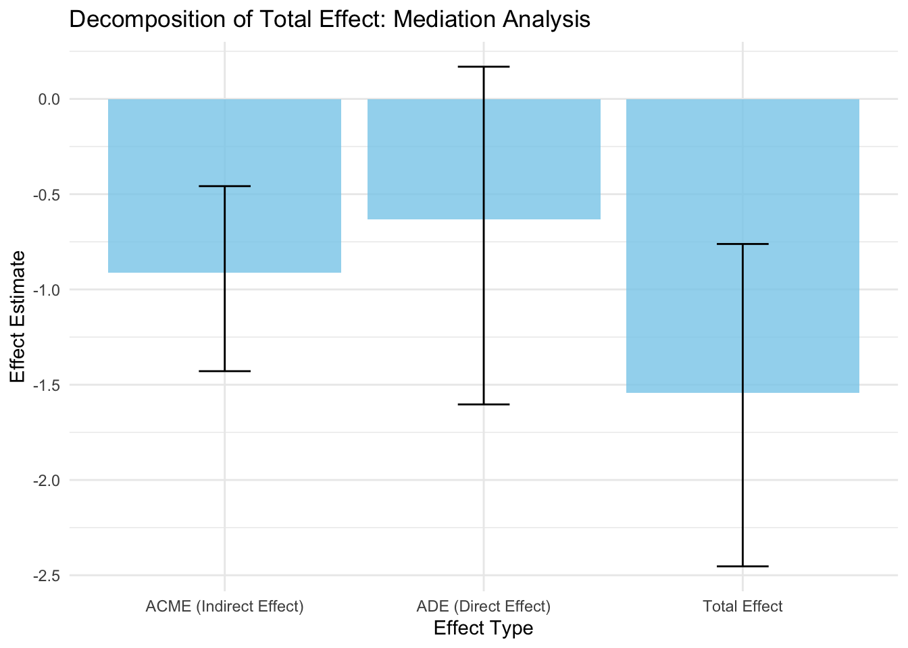

Project Report
Motivation
According to the New York State Department of Health, approximately two-thirds of adult New Yorkers have a Body Mass Index (BMI) classified as either obese (29.1%) or overweight (34.5%), impacting over 8.4 million adults across New York State. Additionally, the NYC Mayor’s Office of Climate and Environmental Justice reports that transportation accounts for approximately 30% of the city’s greenhouse gas emissions. By examining the impact of active design on physical activity and transportation, this project aims to provide insights that can inform policies to improve public health and reduce environmental impact in New York City.
Initial Questions
We were interested in exploring the availability of sidewalk areas and the percentage of walking among commuters influence obesity rates across different boroughs and neighborhoods. The purposes of this project is to answer the following questions:
- What are the most popular commuting methods in different
boroughs?
- Which area (by borough) has the highest obesity rate?
- What is the association between sidewalk areas and the percentage of
walking among commuters by boroughs?
- How does the availability of sidewalk areas and the percentage of walking among commuters influence obesity rates across different boroughs?
Data Sources and Cleaning
Due to the limitations of the variables and information within the dataset, the data cleaning process was conducted independently for each analysis part.
Part 1.
Firstly, we processed both
neighborhood- and borough-level commuting data, focusing on
four commuting methods: bicycle, car/truck/van, public transportation,
and walking. These methods are represented in terms of both absolute
numbers and percentages. We clean the dataset by removing unnecessary
columns, renaming variables for clarity (e.g., geography
renamed to neighborhood and borough
accordingly based on analysis needs), and converting numeric data from
character format to ensure proper analysis.
Next, we pivot the data into a long format, enabling a flexible
structure for analysis and visualization by method and borough. The
dataset is sorted by geo_id for a consistent ordering of
boroughs. This preparation provides a clean and organized dataset that
supports further exploratory analysis of commuting patterns and their
relationships to sidewalk and obesity factors.
The final dataset commuting_data showed below.
library(tidyverse)
library(janitor)
library(knitr)
library(kableExtra)
commuting_df =
read.csv("data/commuting.csv", na = c("NA",".","")) |>
janitor::clean_names()
borough_df =
commuting_df |>
filter(geo_type_desc == "Borough") |>
select(-geo_type_desc) |>
rename(borough = geography) |>
mutate(across(
c(bicycle_number,
car_truck_or_van_number,
public_transportation_number,
walked_number),
~as.numeric(gsub(",", "", .))))
commuting_data = borough_df |>
pivot_longer(
cols = -c(time_period, geo_id, geo_rank, borough),
names_to = c("method", ".value"),
names_pattern = "(.*)_(number|percent)$"
) |>
select(-geo_rank) |>
arrange(geo_id)
commuting_data |>
knitr::kable(
digits = 3,
caption = "Commuting Data by Borough",
align = rep("l", ncol(commuting_data))
) |>
kableExtra::kable_styling(
bootstrap_options = c("striped", "hover", "condensed"),
font_size = 12
) |>
kableExtra::scroll_box(width = "100%", height = "300px")| time_period | geo_id | borough | method | number | percent |
|---|---|---|---|---|---|
| 2017-21 | 1 | Bronx | bicycle | 2589 | 0.4 |
| 2017-21 | 1 | Bronx | car_truck_or_van | 164218 | 28.4 |
| 2017-21 | 1 | Bronx | public_transportation | 324274 | 56.1 |
| 2017-21 | 1 | Bronx | walked | 41772 | 7.2 |
| 2017-21 | 2 | Brooklyn | bicycle | 24134 | 2.0 |
| 2017-21 | 2 | Brooklyn | car_truck_or_van | 274494 | 22.3 |
| 2017-21 | 2 | Brooklyn | public_transportation | 663716 | 53.8 |
| 2017-21 | 2 | Brooklyn | walked | 104403 | 8.5 |
| 2017-21 | 3 | Manhattan | bicycle | 20706 | 2.3 |
| 2017-21 | 3 | Manhattan | car_truck_or_van | 67721 | 7.6 |
| 2017-21 | 3 | Manhattan | public_transportation | 450560 | 50.8 |
| 2017-21 | 3 | Manhattan | walked | 167318 | 18.9 |
| 2017-21 | 4 | Queens | bicycle | 7082 | 0.6 |
| 2017-21 | 4 | Queens | car_truck_or_van | 437872 | 38.9 |
| 2017-21 | 4 | Queens | public_transportation | 511929 | 45.5 |
| 2017-21 | 4 | Queens | walked | 64864 | 5.8 |
| 2017-21 | 5 | Staten Island | bicycle | 408 | 0.2 |
| 2017-21 | 5 | Staten Island | car_truck_or_van | 138342 | 63.0 |
| 2017-21 | 5 | Staten Island | public_transportation | 57509 | 26.2 |
| 2017-21 | 5 | Staten Island | walked | 6023 | 2.7 |
We proceed to import our data using both read.csv() and read_csv() from the readr package, specifying NA values to accurately handle missing data right from the start. We then standardize column names to a uniform format with janitor::clean_names() function, which simplifies further coding and analysis. Moreover,we also transform the data by converting numeric fields from string format to actual numbers, removing commas for accurate calculations, and filtering the dataset to include only borough-level data
Similarly, for overweight & obesity dataset, we first create a bar chart using ggplot2 to display obesity rates and corresponding numbers for each NYC borough, enhancing clarity with direct textual annotations on the bars. To make the chart interactive and allow dynamic exploration, we employ plotly, transforming the static ggplot into an interactive visualization. Additionally, we develop a trend line plot to illustrate changes in obesity rates over the years across boroughs. This line plot, also made interactive with plotly, includes tooltips that provide detailed data insights when users hover over any point, thus enabling a deeper understanding of obesity trends within each borough.
The final dataset obesity_data showed below.
# Load and clean the data
library(janitor)
library(DT)
overweight_overall_df <- read_csv("data/overweightoverall.csv") %>%
clean_names() %>%
mutate(
obesity_rate = as.numeric(sub("\\s*\\(.*$", "", percent)),
geo_type = tolower(geo_type)
) %>%
filter(geo_type == "borough")
overweight_overall_df <- overweight_overall_df %>%
rename(year = time_period)
datatable(
overweight_overall_df %>%
select(year, geography, number, percent),
options = list(
pageLength = 10,
autoWidth = TRUE,
searchHighlight = TRUE,
searchPanes = list(columns = c(1)),
dom = 'Bfrtip',
buttons = c('copy', 'csv', 'excel', 'pdf', 'print')
),
extensions = 'Buttons',
class = 'cell-border stripe'
) %>%
formatStyle(
columns = c('number', 'percent'),
valueColumns = 'number'
)Part 2. Essential Variables Overview
library(tidyverse)
commuting_df = read.csv("data/commuting.csv", na = c("NA",".","")) |>
janitor::clean_names() |>
rename(geo_type = geo_type_desc) |>
filter(
geo_type %in% c("UHF 42", "Citywide", "Borough"))
overweight_overall_df = read_csv("data/overweightoverall.csv", na = c("NA",".","")) |>
janitor::clean_names() |>
rename(
obs_number = number,
obs_percent = percent
) |>
separate(
obs_percent,
into = c("obs_percent", "obs_percent_range"),
sep = "\\s*\\(\\s*",
convert = TRUE
) |>
mutate(obs_percent_range = str_remove(obs_percent_range, "\\)$"))
sidewalk_df = read_csv("data/sidewalk.csv", na = c("NA",".","")) |>
janitor::clean_names() |>
mutate(neighborhood_geo_id = paste(geography, geo_id, sep = ", "))
commuting_sidewalk_df =
inner_join(commuting_df, sidewalk_df, by = c("geo_id", "geo_rank", "geography")) |>
dplyr::select(-time_period.x, -time_period.y, everything()) |>
mutate(
bicycle_info = paste0(bicycle_number, " (", bicycle_percent, "%)"),
car_truck_van_info = paste0(car_truck_or_van_number, " (", car_truck_or_van_percent, "%)"),
public_transport_info = paste0(public_transportation_number, " (", public_transportation_percent, "%)"),
walked_info = paste0(walked_number, " (", walked_percent, "%)")
)To understand the association between obesity rates in different areas, urban design (Sidewalk Coverage), and various commuting methods, we included the following key variables in our analysis:
The major outcome variable in this analysis is obesity rate, which represents the estimated proportion of adults classified as overweight or obese. It is calculated using two metrics: first, the absolute number of individuals, rounded to the nearest 1,000, who fall into specific BMI categories (overweight: BMI 25–29.9; obese: BMI ≥30); second, the percentage of the total population meeting these BMI thresholds.
The obesity rate demonstrates variability across regions. Below is a summary of key descriptive statistics:
# Calculate summary statistics for obesity percentage
obesity_table = overweight_overall_df |>
summarize(
overall_mean = mean(as.numeric(obs_percent), na.rm = TRUE),
overall_std = sd(as.numeric(obs_percent), na.rm = TRUE),
min_value = min(as.numeric(obs_percent), na.rm = TRUE),
max_value = max(as.numeric(obs_percent), na.rm = TRUE)
) |>
rename(
"Mean" = overall_mean,
"Std Dev" = overall_std,
"Min" = min_value,
"Max" = max_value
)
# Define the table structure
obesity_table = tibble(
measure1 = c("Mean", "Std Dev"),
value1 = c(57.43, 9.47),
measure2 = c("Min", "Max"),
value2 = c(30.1, 78.7)
)
obesity_table |>
knitr::kable(
caption = "Summary Statistics for Obesity Rate",
col.names = NULL,
align = "c",
digits = 2
)| Mean | 57.43 | Min | 30.1 |
| Std Dev | 9.47 | Max | 78.7 |
The mean obesity rate across regions is 57.43%, with a standard deviation of 9.47%, indicating moderate variability. The minimum observed obesity rate is 30.1%, while the maximum is 78.7%. This variation suggests disparities between regions, potentially influenced by factors such as urban design, socioeconomic conditions, and access to health resources. Areas with lower rates may benefit from better infrastructure or healthier lifestyles, while regions with higher rates may require targeted interventions to address obesity-related challenges.
Our first explanatory variable, sidewalk area, is calculated as the total curb-to-building sidewalk area (in square kilometers) within the UHF neighborhood and borough, divided by the total land area (excluding inland water bodies), and expressed as a percentage.
To explore how urban design affects health outcomes, we summarize sidewalk area coverage percentages as follows:
# Calculate summary statistics for sidewalk area percentage
sidewalk_table = sidewalk_df |>
summarize(
overall_mean = mean(percent_of_land_area, na.rm = TRUE),
overall_std = sd(percent_of_land_area, na.rm = TRUE),
min_value = min(percent_of_land_area, na.rm = TRUE),
max_value = max(percent_of_land_area, na.rm = TRUE)
) |>
rename(
"Mean" = overall_mean,
"Std Dev" = overall_std,
"Min" = min_value,
"Max" = max_value
)
# Define the table structure
sidewalk_table = tibble(
measure1 = c("Mean", "Std Dev"),
value1 = c(7.59, 2.34),
measure2 = c("Min", "Max"),
value2 = c(2.7, 11.3)
)
sidewalk_table |>
knitr::kable(
caption = "Summary Statistics for Sidewalk Area",
col.names = NULL,
align = "c",
digits = 2
)| Mean | 7.59 | Min | 2.7 |
| Std Dev | 2.34 | Max | 11.3 |
Next, the second explanatory variable is commuting methods, which provide insights into how adults travel to work, categorized by modes such as public transit, biking, walking, or private vehicles. These patterns help us understand transportation availability, individual choices, traffic conditions, and safety concerns. The dataset includes information on the estimated number and proportion of workers aged 16 and above using each commuting mode, including bicycling, driving (car, truck, or van), public transportation, and walking.
Below are the summarized statistics for commuting methods:
# Calculate summary statistics for commuting percentages
commuting_table <- commuting_df %>%
summarize(
bike_mean = mean(bicycle_percent, na.rm = TRUE),
bike_std = sd(bicycle_percent, na.rm = TRUE),
bike_min = min(bicycle_percent, na.rm = TRUE),
bike_max = max(bicycle_percent, na.rm = TRUE),
car_mean = mean(car_truck_or_van_percent, na.rm = TRUE),
car_std = sd(car_truck_or_van_percent, na.rm = TRUE),
car_min = min(car_truck_or_van_percent, na.rm = TRUE),
car_max = max(car_truck_or_van_percent, na.rm = TRUE),
walk_mean = mean(walked_percent, na.rm = TRUE),
walk_std = sd(walked_percent, na.rm = TRUE),
walk_min = min(walked_percent, na.rm = TRUE),
walk_max = max(walked_percent, na.rm = TRUE),
public_mean = mean(public_transportation_percent, na.rm = TRUE),
public_std = sd(public_transportation_percent, na.rm = TRUE),
public_min = min(public_transportation_percent, na.rm = TRUE),
public_max = max(public_transportation_percent, na.rm = TRUE)
) %>%
pivot_longer(cols = everything(), names_to = "Variable", values_to = "Value") %>%
separate(Variable, into = c("Method", "Stat"), sep = "_") %>%
pivot_wider(names_from = "Stat", values_from = "Value")
commuting_table |>
knitr::kable(
caption = "Summary Statistics for Commuting Methods",
digits = 2
)| Method | mean | std | min | max |
|---|---|---|---|---|
| bike | 1.28 | 1.23 | 0.1 | 5.1 |
| car | 28.86 | 19.13 | 4.9 | 68.7 |
| walk | 9.58 | 7.09 | 1.4 | 35.0 |
| public | 47.75 | 12.44 | 21.7 | 67.5 |
The summary statistics for commuting methods reveal distinct trends in how people travel to work. Public transportation emerges as the most commonly used mode, with an average usage rate of 47.75%, followed by cars at 28.86%. Walking and biking, though less frequent, still play significant roles in some areas, with averages of 9.58% and 1.28%, respectively. The observed variability across methods, particularly in car and public transit usage, highlights differences in regional infrastructure, accessibility, and commuting preferences. These insights into commuting behaviors provide critical context for understanding urban mobility and its potential impact on health outcomes. Transitioning to the final explanatory variable, geographical data allows us to examine these variables at both neighborhood and borough levels, offering a nuanced understanding of how urban design and commuting patterns intersect with health outcomes.
Finally, the geographical variables in our analysis involve data aggregated at both the neighborhood and borough levels. Neighborhood-level data provides detailed insights into smaller, localized areas, allowing us to examine specific community characteristics. Borough-level data offers a broader regional perspective, enabling comparisons across larger urban sections. This dual-scale approach enhances our understanding of how urban design and commuting patterns intersect with health outcomes like obesity rates, offering a nuanced perspective on spatial variations within the city.
Having outlined the essential variables, we delve deeper into exploring the relationships between these variables. In the following section, we perform Explanatory Data Analysis (EDA) to uncover patterns and associations, such as how sidewalk coverage and commuting patterns influence obesity rates and how these variables differ across geographical levels.
EDA
Neighborhood Level:
We first explore the distribution of interested outcome variable, Sidewalk Coverage, then explore the distributions of two exposure variables and their relationship of Sidewalk Coverage.
The analysis begins by examining the distribution of sidewalk coverage percentages across neighborhoods, as shown in the first bar chart. Sidewalk coverage ranges from approximately 2.7% to 11.3%, with the interquartile range (IQR) between 6.2% and 9.5%. The median value sits at 7.65%. These findings highlight the significant variability in sidewalk coverage across neighborhoods, which could have implications for urban mobility, public health, and commuting behaviors. Neighborhoods with higher sidewalk coverage may be better equipped to promote walkability and active modes of transport, while areas with lower coverage might rely more heavily on vehicular commuting.
library(ggridges)
library(tidyverse)
library(plotly)
library(gridExtra)
library(reshape2)
commuting_df = read.csv("data/commuting.csv", na = c("NA",".","")) |>
janitor::clean_names() |>
rename(geo_type = geo_type_desc) |>
filter(
geo_type %in% c("UHF 42", "Citywide", "Borough"))
overweight_overall_df = read_csv("data/overweightoverall.csv", na = c("NA",".","")) |>
janitor::clean_names()
sidewalk_df = read_csv("data/sidewalk.csv", na = c("NA",".","")) |>
janitor::clean_names() |>
mutate(neighborhood_geo_id = paste(geography, geo_id, sep = ", "))
commuting_sidewalk_df =
inner_join(commuting_df, sidewalk_df, by = c("geo_id", "geo_rank", "geography")) |>
dplyr::select(-time_period.x, - time_period.y, everything()) |>
mutate(
bicycle_info = paste0(bicycle_number, " (", bicycle_percent, "%)"),
car_truck_van_info = paste0(car_truck_or_van_number, " (", car_truck_or_van_percent, "%)"),
public_transport_info = paste0(public_transportation_number, " (", public_transportation_percent, "%)"),
walked_info = paste0(walked_number, " (", walked_percent, "%)")
)
Sidewalk_distri = ggplot(sidewalk_df, aes(x = neighborhood_geo_id , y = percent_of_land_area)) +
geom_col(fill = "skyblue1", color = "black", alpha = 0.8) +
labs(x = "Neighborhood (Geo ID)", y = "Percent of Sidewalk Coverage (%)",
title = "Distribution of Sidewalk Area by Neighborhood (Geo ID)") +
theme_minimal() +
theme(axis.text.x = element_blank())
ggplotly(Sidewalk_distri)The next step explores how commute modes—bicycle, walking, car/truck/van, and public transportation—are distributed across neighborhoods and how they relate to sidewalk coverage. The stacked bar chart reveals that public transportation (represented in dark green) is the predominant mode of commuting in most neighborhoods, while walking (in thistle purple) and bicycling (light pink) are less common. This disparity likely reflects the challenges of walkability and infrastructure limitations in certain areas. Additionally, neighborhoods with higher reliance on walking tend to have better sidewalk coverage, emphasizing the role of urban design in facilitating sustainable commuting practices.
stacked_data = commuting_sidewalk_df |>
filter(geo_type.x == "UHF 42") |>
dplyr::select(bicycle_percent, car_truck_or_van_percent,
public_transportation_percent, walked_percent, geography) |>
melt(id.vars = "geography",
variable.name = "Commute_Mode",
value.name = "Percent")
csassocci_chart = ggplot(stacked_data, aes(y = geography, x = Percent, fill = Commute_Mode)) +
geom_bar(stat = "identity", position = "stack") +
labs(title = "Distribution of Commute Modes and Sidewalk Coverage Across Neighborhoods",
y = NULL,
x = "Percent of Sidewalk Coverage (%)",
fill = "Commute Mode") +
theme_minimal() +
theme(axis.text.y = element_text(size = 7),legend.position = "none") +
scale_fill_manual(values = c("lightpink", "darkolivegreen", "gold","thistle"))
ggplotly(csassocci_chart, tooltip = c("Percent", "Commute_Mode"))The relationship between sidewalk coverage and public health, particularly obesity percentages, is further analyzed. The line graph tracks obesity trends from 2014 to 2022 across neighborhoods. While some neighborhoods show consistently high obesity percentages (e.g., parts of the Bronx and Staten Island), others like Manhattan demonstrate lower percentages, reflecting potential benefits of high walkability and robust transportation options. This trend underscores the potential of urban infrastructure to influence health outcomes.
filtered_obs_data <- overweight_overall_df |>
filter(time_period >= 2014 & time_period <= 2022) |>
mutate(percent = as.numeric(gsub("\\(.*?\\)", "", percent)))
obs_dictri = filtered_obs_data |>
plot_ly(
x = ~time_period,
y = ~percent,
color = ~geography,
type = 'scatter',
mode = 'lines+markers',
text = ~paste("Neighborhood:", geography, "<br>Year:", time_period, "<br>Percentage:", percent, "%"),
hoverinfo = 'text'
) |>
layout(
title = list(text = "Obesity Trend by Neighborhood (2014-2022)", x = 0.5),
xaxis = list(title = "Year"),
yaxis = list(title = "Obesity Percentage (%)"),
legend = list(
title = list(
x = 1.05,
y = 0.5,
xanchor = "left",
yanchor = "middle",
orientation = "v",
font = list(size = 6)
),
clickmode = 'event+select'
))
ggplotly(obs_dictri)Please click a neighborhood to explore in detail.
The scatterplot provides a more detailed view of the relationship between sidewalk coverage and obesity percentages, focusing on 2014 and 2022. In 2014, the data indicates a weak correlation between the two variables, as obesity percentages remain relatively uniform across different levels of sidewalk coverage. However, by 2022, a stronger negative trend emerges—neighborhoods with higher sidewalk coverage exhibit noticeably lower obesity percentages. This shift may reflect the growing impact of improved urban design, active commuting options, and public health initiatives over time.
Outliers in both years highlight the complexity of these dynamics, suggesting that other contextual factors, such as socioeconomic status or access to healthy foods, may also play a role. The analysis reinforces the importance of investing in walkable infrastructure as a strategy to address public health disparities.
osassoci_df = overweight_overall_df |>
filter(time_period %in% c(2014, 2022)) |>
mutate(year = as.factor(time_period)) |>
inner_join(sidewalk_df, by = c("geo_id","geography")) |>
dplyr::select(geography, number, percent, percent_of_land_area, year) |>
rename(
obs_number = number,
obs_percent = percent
) |>
separate(
obs_percent,
into = c("obs_percent", "obs_percent_range"),
sep = "\\s*\\(\\s*",
convert = TRUE
) |>
mutate(
obs_percent_range = str_remove(obs_percent_range, "\\)$"),
obs_percent = as.numeric(obs_percent))
osassoci_plot = ggplot(osassoci_df, aes(x = percent_of_land_area, y = obs_percent, color = year,)) +
geom_point(size = 3, alpha = 0.7) +
geom_smooth(se = FALSE, color = "gold", linetype = "solid") +
labs(
title = "Sidewalk Area vs. Obesity (2014 and 2022)",
x = "Percent of Sidewalk Coverage (%)",
y = "Obesity Percentage (%)"
) +
facet_wrap(~year, ncol = 2) +
theme_minimal() +
theme(
plot.title = element_text(hjust = 0.5, size = 14, face = "bold"),
axis.title = element_text(size = 12),
legend.position = "none"
)
ggplotly(osassoci_plot)The neighborhood-level analysis underscores the critical influence of sidewalk coverage and urban infrastructure on commuting behaviors and health outcomes. Neighborhoods with higher sidewalk coverage demonstrate a greater reliance on walking and public transportation, which can contribute to more active lifestyles and reduced obesity rates. Conversely, areas with lower sidewalk coverage tend to depend more on car/truck commuting, possibly exacerbating sedentary behaviors and associated health risks.
These findings suggest that targeted investments in improving sidewalk infrastructure, particularly in neighborhoods with low coverage, could promote walkability and encourage healthier commuting patterns. However, the observed disparities highlight the need to consider other contextual factors, such as socioeconomic status, urban density, and accessibility to recreational spaces, to create equitable and effective urban planning strategies. As we transition to a borough-level perspective, we explore how these patterns aggregate and vary across broader regions, providing additional insights into geographic disparities and their implications for urban policy.
Borough Level:
Firstly, we gain an initial understanding of the commuting patterns across New York City’s boroughs by analyzing the distribution of various commuting methods.A bar chart provides a clear visual representation of the total amount of transportation modes used in each borough. A percentage distribution bar chart is used to highlight the relative popularity of each mode of transport within the boroughs.
library(tidyverse)
library(janitor)
library(knitr)
library(gridExtra)
library(reshape2)
library(plotly)
library(haven)
library(sf)
knitr::opts_chunk$set(
warning = FALSE,
message = FALSE,
fig.align = 'center')
theme_set(theme_minimal() + theme(legend.position = "bottom"))
commuting_df =
read.csv("data/commuting.csv", na = c("NA",".","")) |>
janitor::clean_names()
borough_df =
commuting_df |>
filter(geo_type_desc == "Borough") |>
mutate(
across(c(bicycle_number, car_truck_or_van_number, public_transportation_number, walked_number),
~as.numeric(gsub(",", "", .))))
commute_long =
pivot_longer(borough_df,
cols = c(bicycle_number,
car_truck_or_van_number,
public_transportation_number,
walked_number),
names_to = "Method",
values_to = "Count",
names_pattern = "(.*)_number") The presented dataset examines the distribution of
commuting methods across different boroughs,
epresented by the total number of each transportation mode utilized.
custom_colors = c("Bronx" = "lightpink", "Brooklyn" = "darkolivegreen", "Manhattan" = "gold", "Queens" = "thistle", "Staten Island" = "#a6cee3")
p1_plotly <- plot_ly(data = commute_long,
x = ~Method,
y = ~Count,
type = 'bar',
color = ~geography,
colors = custom_colors,
text = ~paste("Borough: ", geography, "<br>Method: ", Method, "<br>Count: ", Count),
hoverinfo = 'text',
marker = list(line = list(color = 'black', width = 1))) |>
layout(title = "Commuting Methods by Borough",
xaxis = list(title = 'Commuting Method', tickangle = 45),
yaxis = list(title = 'Count of Commuters'),
barmode = 'group',
legend = list(title = list(text = "Borough")),
margin = list(t = 50, l = 50, r = 50, b = 100)
)
ggplotly(p1_plotly, tooltip = "text")Overall, the most prominent mode is public transportation. In contrast, the use of bicycles is minimal across all boroughs, with Staten Island reporting the lowest numbers. Walking as a commuting mode demonstrates moderate levels, with Manhattan showing the highest prevalence compared to other boroughs.
commute_percent_long =
pivot_longer(borough_df,
cols = c(bicycle_percent,
car_truck_or_van_percent,
public_transportation_percent,
walked_percent),
names_to = "Method",
values_to = "Percent",
names_pattern = "(.*)_percent")
custom_colors = c("bicycle" = "lightpink", "car_truck_or_van" = "darkolivegreen", "public_transportation" = "gold", "walked" = "thistle")
p2_plotly <- plot_ly(data = commute_percent_long,
x = ~geography,
y = ~Percent,
type = 'bar',
color = ~Method,
colors = custom_colors,
text = ~paste("Borough: ", geography, "<br>Method: ", Method, "<br>Percentage: ", sprintf("%.1f%%", Percent)),
hoverinfo = 'text',
marker = list(line = list(color = 'black', width = 1))) |>
layout(title = "Percentage Distribution of Commuting Methods by Borough",
xaxis = list(title = 'Borough', tickangle = 45),
yaxis = list(title = 'Percentage (%)', ticksuffix = "%"),
barmode = 'stack',
legend = list(title = list(text = "Borough")),
margin = list(t = 50, l = 50, r = 50, b = 100)
)
ggplotly(p2_plotly, tooltip = "text")The presented dataset examines the percentage distribution of commuting modes across New York City’s boroughs. The bar chart highlights that public transportation is the most widely used commuting mode in most boroughs, with over 50% of commuters relying on it in areas like Manhattan, Queens, and the Bronx. In contrast, Staten Island deviates from this trend, where cars, trucks, and vans dominate as the primary commuting mode, accounting for the majority of transportation. Walking also contributes notably in Manhattan, reflecting its dense urban environment.
overweight2022_df =
read.csv("data/overweight2022.csv", na = c("NA",".","")) |>
janitor::clean_names()
overweight_df = read_csv("data/overweight2022.csv") |>
clean_names() |>
mutate(
obesity_rate_raw = percent,
percent_numeric = sub("\\s*\\(.*$", "", percent),
obesity_rate = as.numeric(percent_numeric),
number_clean = as.numeric(gsub(",", "", number))
) |>
filter(geo_type_desc == "Borough") |>
dplyr::select(-percent_numeric)
na_check = overweight_df |>
filter(is.na(obesity_rate))
overweight_overall_df = read_csv("data/overweightoverall.csv") |>
clean_names() |>
mutate(
obesity_rate = as.numeric(sub("\\s*\\(.*$", "", percent)),
geo_type = tolower(geo_type)
) |>
filter(geo_type == "borough")
overweight2022_df = overweight2022_df |>
mutate(obesity_rate = as.numeric(sub("\\s*\\(.*\\)$", "", percent)))
borough_data = overweight2022_df |>
filter(geo_type_desc == "Borough")
borough_with_highest_obesity = borough_data |>
filter(obesity_rate == max(obesity_rate))
custom_colors = c("lightpink", "darkolivegreen", "gold", "thistle", "#a6cee3")
obesity_plotly <- plot_ly(data = overweight_df,
x = ~geography,
y = ~obesity_rate,
type = 'bar',
color = ~geography,
colors = custom_colors,
text = ~paste("Obesity Rate: ", obesity_rate, "%<br>Number: ", number_clean),
hoverinfo = 'text',
marker = list(line = list(color = 'black', width = 1))) |>
layout(title = "Obesity Rates and Numbers by Borough in NYC, 2022",
xaxis = list(title = "Borough", tickangle = 45),
yaxis = list(title = "Obesity Rate (%)"),
legend = list(title = "Borough"))
ggplotly(obesity_plotly, tooltip = "text")The above graph showcases the obesity rates and corresponding numbers across various boroughs in NYC for the year 2022. The data is represented by a bar chart, where each color-coded bar corresponds to a different borough. The Bronx stands out with the highest obesity rate, significantly surpassing the other boroughs, whereas Manhattan reports the lowest rate, indicating a stark contrast in obesity prevalence within the city. Queens, Brooklyn, and Staten Island exhibit moderate obesity rates, illustrating varied health profiles across these regions.
custom_colors = c("lightpink", "darkolivegreen", "gold", "thistle", "#a6cee3")
obesity_trend_plotly <- plot_ly(data = overweight_overall_df,
x = ~time_period,
y = ~obesity_rate,
type = 'scatter',
mode = 'lines+markers',
color = ~geography,
colors = custom_colors,
text = ~paste("Borough: ", geography,
"<br>Year: ", time_period,
"<br>Rate: ", sprintf("%.1f%%", obesity_rate)), # Dynamic text evaluation for hover
hoverinfo = 'text') |>
layout(title = "Trend of Obesity Rates by Year and Borough",
xaxis = list(title = "Year", tickangle = 45),
yaxis = list(title = "Obesity Rate (%)"),
legend = list(title = "Borough"))
ggplotly(obesity_trend_plotly, tooltip = "text")This graph shows the changes in obesity rates across New York City’s boroughs from the early 2000s to 2022. Matching with what we had in last graph, the Bronx has consistently high obesity rates, suggesting ongoing health challenges there. Manhattan generally has the lowest rates, possibly due to different lifestyle factors. Brooklyn, Queens, and Staten Island show varied rates over the years, with ups and downs. We will explore more on the relationship between obesity and other factors in the model building part.
Model Building
Simple Linear Regression
To investigate the direct relationship between sidewalk area percentage and walking commuter rates, a simple linear regression model was constructed. This model quantifies how sidewalk infrastructure influences the proportion of residents who commute by walking. By establishing a foundational understanding of this relationship, the analysis sets the stage for exploring more complex interactions.
The regression equation is defined as: \[Y_{Walking Commuters Percentage}=\beta_0 + \beta_1X_{Sidewalk Area Percentage} + \epsilon\]
commuting_df = read.csv("data/commuting.csv", na = c("NA",".","")) |>
janitor::clean_names() |>
rename(geo_type = geo_type_desc) |>
filter(
geo_type %in% c("UHF 42", "Citywide", "Borough"))
overweight_overall_df = read_csv("data/overweightoverall.csv", na = c("NA",".","")) |>
janitor::clean_names() |>
rename(
obs_number = number,
obs_percent = percent
) |>
separate(
obs_percent,
into = c("obs_percent", "obs_percent_range"),
sep = "\\s*\\(\\s*",
convert = TRUE
) |>
mutate(obs_percent_range = str_remove(obs_percent_range, "\\)$"))
sidewalk_df = read_csv("data/sidewalk.csv", na = c("NA",".","")) |>
janitor::clean_names() |>
mutate(neighborhood_geo_id = paste(geography, geo_id, sep = ", "))
commuting_sidewalk_df =
inner_join(commuting_df, sidewalk_df, by = c("geo_id", "geo_rank", "geography")) |>
dplyr::select(-time_period.x, -time_period.y, everything()) |>
mutate(
bicycle_info = paste0(bicycle_number, " (", bicycle_percent, "%)"),
car_truck_van_info = paste0(car_truck_or_van_number, " (", car_truck_or_van_percent, "%)"),
public_transport_info = paste0(public_transportation_number, " (", public_transportation_percent, "%)"),
walked_info = paste0(walked_number, " (", walked_percent, "%)")
)
side_walking_data = commuting_sidewalk_df |>
dplyr::select(geography, percent_of_land_area, walked_percent) |>
mutate(
walked_percent = as.numeric(walked_percent),
percent_of_land_area = as.numeric(percent_of_land_area)
) |>
filter(!is.na(walked_percent) & !is.na(percent_of_land_area))
lm_model = lm(walked_percent ~ percent_of_land_area, data = side_walking_data)
lm_summary = summary(lm_model)
library(ggplot2)
ggplot(commuting_sidewalk_df, aes(x = percent_of_land_area, y = walked_percent)) +
geom_point() +
geom_smooth(method = "lm", color = "skyblue1") +
labs(title = "Relationship between Sidewalk Area and Walking Commuters", font = 7,
x = "Sidewalk Area Percentage",
y = "Walking Commuters Percentage") +
theme_minimal()
# Create the coefficient results table
simplr_coefficient_results = data.frame(
Effect = c("Intercept", "Slope"),
Estimate = c(lm_summary$coefficients[1,1], lm_summary$coefficients[2,1]),
'CI.Lower' = c(lm_summary$coefficients[1,1] - 1.96 * lm_summary$coefficients[1,2],
lm_summary$coefficients[2,1] - 1.96 * lm_summary$coefficients[2,2]),
'CI.Upper' = c(lm_summary$coefficients[1,1] + 1.96 * lm_summary$coefficients[1,2],
lm_summary$coefficients[2,1] + 1.96 * lm_summary$coefficients[2,2]),
'p.value' = c(lm_summary$coefficients[1,4], lm_summary$coefficients[2,4])
)
knitr::kable(simplr_coefficient_results,
caption = "Simple Linear Regression Coefficients",
digits = 3) | Effect | Estimate | CI.Lower | CI.Upper | p.value |
|---|---|---|---|---|
| Intercept | -5.307 | -10.588 | -0.026 | 0.055 |
| Slope | 1.962 | 1.297 | 2.628 | 0.000 |
# Create the model statistics table
simplr_model_statistics = data.frame(
Statistic = c("Slope Std.Error", "Slope t-value", "Slope p-value",
"R-squared", "Adjusted R-squared", "F-statistic",
"F-statistic p-value", "Residual Std. Error"),
Value = c(lm_summary$coefficients[2,2],
lm_summary$coefficients[2,3],
lm_summary$coefficients[2,4],
lm_summary$r.squared,
lm_summary$adj.r.squared,
lm_summary$fstatistic[1],
pf(lm_summary$fstatistic[1],
lm_summary$fstatistic[2],
lm_summary$fstatistic[3],
lower.tail = FALSE),
lm_summary$sigma)
)
knitr::kable(simplr_model_statistics,
caption = "Simple Linear Regression Model Statistics",
digits = 3) | Statistic | Value |
|---|---|
| Slope Std.Error | 0.340 |
| Slope t-value | 5.779 |
| Slope p-value | 0.000 |
| R-squared | 0.421 |
| Adjusted R-squared | 0.408 |
| F-statistic | 33.395 |
| F-statistic p-value | 0.000 |
| Residual Std. Error | 5.456 |
Key Findings:
Scatterplot Analysis: The scatterplot reveals a positive relationship between sidewalk area percentage and walking commuter rates, with a linear trend suggesting that as sidewalk coverage increases, so does the percentage of walking commuters.
Regression Results:
- The slope coefficient (β₁ = 1.962) indicates that for every 1% increase in sidewalk area, walking commuter rates are predicted to increase by approximately 1.96 percentage points.
- The intercept of −5.307 suggests negative predicted walking rates at very low sidewalk percentages, indicating the model’s limitations at extreme values.
- The model explains 42.1% of the variance in walking commuter rates, reflecting moderate predictive power.
These results highlight the substantial impact of sidewalk infrastructure on walking behavior. Higher sidewalk area percentages are strongly associated with increased walking commuter rates. However, the unexplained variance suggests that other factors, such as neighborhood characteristics or availability of public transit, may also influence walking behavior.
Multiple Linear Regression
Building on the simple regression analysis, a multiple linear regression model was developed to assess how sidewalk area percentage and walking commuter rates jointly influence obesity rates. This approach allows for a more comprehensive understanding of how urban design and active commuting behaviors interact to affect public health outcomes.
The regression equation is defined as: \[Y_{Obesity Percentage}=\beta_0 + \beta_1X_{Sidewalk Area Percentage} + \beta_2X_{Walking Commuters Percentage} + \epsilon\]
sw_obs_data = overweight_overall_df |>
filter(time_period %in% c(2014, 2022)) |>
mutate(obs_percent = as.numeric(gsub("\\*|\\(|\\)", "", obs_percent))) |>
dplyr::select(geo_id, geography, obs_percent) |>
inner_join(commuting_sidewalk_df, by = c("geo_id", "geography")) |>
dplyr::select(geography, percent_of_land_area, walked_percent, obs_percent) |>
mutate(
walked_percent = as.numeric(walked_percent),
percent_of_land_area = as.numeric(percent_of_land_area),
obs_percent = as.numeric(obs_percent)
) |>
filter(!is.na(walked_percent) & !is.na(percent_of_land_area) & !is.na(obs_percent))
lm_model_obesity = lm(obs_percent ~ percent_of_land_area + walked_percent, data = sw_obs_data)
lm_summary_obesity = summary(lm_model_obesity)
# Create the mean dataset for the Walking Commuters Percentage
mean_walked_data <- sw_obs_data %>%
mutate(walked_percent = mean(walked_percent))
sw_obs_data_plot =
ggplot(sw_obs_data, aes(x = percent_of_land_area, y = obs_percent, color = walked_percent)) +
geom_point(size = 3, alpha = 0.7) +
geom_smooth(method = "lm",
formula = y ~ x,
color = "gold",
linetype = "solid",
size = 1) +
geom_smooth(data = mean_walked_data,
aes(x = percent_of_land_area, y = obs_percent),
method = "lm",
formula = y ~ x,
color = "skyblue",
linetype = "dashed",
size = 1.2,
inherit.aes = FALSE) +
labs(
title = "Influence of Sidewalk Areas and Walking Commuters on Obesity Rates",
x = "Sidewalk Area Percentage",
y = "Obesity Percentage",
color = "Walking Commuters Percentage"
) +
theme_minimal()
sw_obs_data_plot
# Create the coefficient results table for multiple regression
multr_coefficient_results = data.frame(
Effect = c("Intercept", "Sidewalk Area Slope", "Walking Commuters Slope"),
Estimate = c(lm_summary_obesity$coefficients[1, "Estimate"],
lm_summary_obesity$coefficients[2, "Estimate"],
lm_summary_obesity$coefficients[3, "Estimate"]),
CI.Lower = c(
lm_summary_obesity$coefficients[1, "Estimate"] - 1.96 * lm_summary_obesity$coefficients[1, "Std. Error"],
lm_summary_obesity$coefficients[2, "Estimate"] - 1.96 * lm_summary_obesity$coefficients[2, "Std. Error"],
lm_summary_obesity$coefficients[3, "Estimate"] - 1.96 * lm_summary_obesity$coefficients[3, "Std. Error"]
),
CI.Upper = c(
lm_summary_obesity$coefficients[1, "Estimate"] + 1.96 * lm_summary_obesity$coefficients[1, "Std. Error"],
lm_summary_obesity$coefficients[2, "Estimate"] + 1.96 * lm_summary_obesity$coefficients[2, "Std. Error"],
lm_summary_obesity$coefficients[3, "Estimate"] + 1.96 * lm_summary_obesity$coefficients[3, "Std. Error"]
),
p.value = c(lm_summary_obesity$coefficients[1, "Pr(>|t|)"],
lm_summary_obesity$coefficients[2, "Pr(>|t|)"],
lm_summary_obesity$coefficients[3, "Pr(>|t|)"])
)
knitr::kable(multr_coefficient_results,
caption = "Multiple Linear Regression Coefficients",
digits = 3)| Effect | Estimate | CI.Lower | CI.Upper | p.value |
|---|---|---|---|---|
| Intercept | 72.377 | 66.198 | 78.556 | 0.000 |
| Sidewalk Area Slope | -0.631 | -1.507 | 0.244 | 0.163 |
| Walking Commuters Slope | -1.097 | -1.558 | -0.636 | 0.000 |
# Create the model statistics table for multiple regression
multr_model_statistics = data.frame(
Statistic = c(
"Slope Std.Error",
"Slope t-value",
"Slope p-value",
"R-squared",
"Adjusted R-squared",
"F-statistic",
"F-statistic p-value",
"Residual Std. Error"
),
Value = c(
lm_summary_obesity$coefficients[2, "Std. Error"],
lm_summary_obesity$coefficients[2, "t value"],
lm_summary_obesity$coefficients[2, "Pr(>|t|)"],
lm_summary_obesity$r.squared,
lm_summary_obesity$adj.r.squared,
lm_summary_obesity$fstatistic[1],
pf(lm_summary_obesity$fstatistic[1],
lm_summary_obesity$fstatistic[2],
lm_summary_obesity$fstatistic[3],
lower.tail = FALSE),
lm_summary_obesity$sigma
)
)
knitr::kable(multr_model_statistics,
caption = "Multiple Linear Regression Model Statistics",
digits = 3)| Statistic | Value |
|---|---|
| Slope Std.Error | 0.447 |
| Slope t-value | -1.413 |
| Slope p-value | 0.163 |
| R-squared | 0.367 |
| Adjusted R-squared | 0.347 |
| F-statistic | 18.234 |
| F-statistic p-value | 0.000 |
| Residual Std. Error | 6.425 |
Key Findings:
Scatterplot Analysis: The scatterplot highlights a negative association between obesity percentages and both predictors (sidewalk area percentage and walking commuters), with stronger relationships observed for walking commuters.
Regression Results:
- The sidewalk area slope suggests that for every 1% increase in sidewalk area, obesity rates decrease by 0.631 percentage points. However, this effect is not statistically significant at the conventional 0.05 level.
- The walking commuter slope indicates that for every 1% increase in walking commuter rates, obesity rates decrease by 1.097 percentage points. This effect is statistically significant.
- The model explains 36.7% of the variance in obesity rates, demonstrating moderate predictive power.
While both sidewalk availability and walking commuter rates are negatively associated with obesity rates, the walking commuter percentage exhibits a stronger and statistically significant relationship. This finding suggests that encouraging walking as a mode of transport may directly impact obesity rates more effectively than sidewalk infrastructure alone. However, the insignificant effect of sidewalk coverage emphasizes the need to explore additional factors, such as dietary patterns, socioeconomic status, and access to recreational spaces, to better understand the determinants of obesity.
The regression models highlight the critical relationships between urban infrastructure, commuting behaviors, and public health outcomes. Sidewalk area percentage was found to positively influence walking commuter rates, which, in turn, had a significant negative association with obesity percentages. These findings emphasize the importance of walkable infrastructure in promoting active commuting and reducing obesity rates, offering valuable insights for urban planning and public health initiatives.
However, the analyses also revealed unexplained variance, suggesting that other factors, such as social, economic, and environmental influences, may play a role in shaping these outcomes. Building on these findings, further exploration is needed to capture the complexities of these relationships, including potential interactions and dynamic influences across neighborhoods.
Interaction Analysis
An interaction model was constructed to determine if the relationship between sidewalk area percentage and obesity rates depended on walking commuter rates. The results showed no significant interaction effect (p = 0.932), indicating that the effects of sidewalk area and walking commuter rates on obesity operate independently. Neither sidewalk area (p = 0.556) nor walking commuter rates (p = 0.317) had significant direct effects on obesity rates in this model.
Next, we are curious whether there are interaction effects between sidewalk area percentage and walking commuter rates on obesity rates. To test this, an interaction model was built to explore whether the effect of sidewalk area percentage on obesity depends on walking commuter rates.
\[Y_{Obesity Percentage} = \beta_0 + \beta_1X_{SidewalkArea} + \beta_2X_{WalkingPercent} + \beta_3(X_{SidewalkArea} \times X_{WalkingPercent}) + \epsilon\]
# Run the interaction model
lm_interaction <- lm(obs_percent ~ percent_of_land_area * walked_percent, data = sw_obs_data)
# Summarize the model
interaction_summary <- summary(lm_interaction)The coefficients from the interaction model are summarized in the following table:
# Extract interaction model parameters
interaction_results <- data.frame(
Estimate = interaction_summary$coefficients[, "Estimate"],
`Std.Error` = interaction_summary$coefficients[, "Std. Error"],
`t-value` = interaction_summary$coefficients[, "t value"],
`p-value` = interaction_summary$coefficients[, "Pr(>|t|)"]
)
# Display the interaction model results
knitr::kable(
interaction_results,
caption = "Interaction Analysis Results",
digits = 3
)| Estimate | Std.Error | t.value | p.value | |
|---|---|---|---|---|
| (Intercept) | 71.805 | 7.366 | 9.749 | 0.000 |
| percent_of_land_area | -0.560 | 0.946 | -0.592 | 0.556 |
| walked_percent | -1.013 | 1.004 | -1.009 | 0.317 |
| percent_of_land_area:walked_percent | -0.010 | 0.117 | -0.086 | 0.932 |
The results indicate that the interaction term (percent_of_land_area:walked_percent) is not statistically significant (p = 0.932), suggesting that the relationship between sidewalk area percentage and obesity rates does not depend on walking commuter rates. This implies that sidewalk area percentage and walking commuter rates operate independently in influencing obesity outcomes.
Visualizing Interaction Effects To better understand the potential interaction, we created a plot that categorizes walking commuter rates into four levels: Low, Moderate, High, and Very High. Each category is represented by a distinct color, with regression lines and shaded confidence intervals illustrating the relationship between sidewalk area percentage and obesity rates for each category.
# Create categories for walking commuter rates
sw_obs_data$walked_percent_category <- cut(
sw_obs_data$walked_percent,
breaks = c(-Inf, 5, 10, 15, Inf), # Define categories
labels = c("Low", "Moderate", "High", "Very High")
)
# Updated plot with categories, confidence intervals, and labels
ggplot(sw_obs_data, aes(x = percent_of_land_area, y = obs_percent, color = walked_percent_category)) +
geom_point(size = 2, alpha = 0.8) + # Add points
geom_smooth(method = "lm", aes(group = walked_percent_category), se = TRUE, linetype = "solid") + # Add regression lines with confidence intervals
scale_color_manual(
values = c("Low" = "blue", "Moderate" = "darkgreen", "High" = "orange", "Very High" = "red"),
name = "Walking Commuter Category"
) + # Custom colors for walking categories
labs(
title = "Interaction Effect Between Sidewalk Area and Walking Commuter Rates on Obesity",
x = "Sidewalk Area Percentage",
y = "Obesity Rates (%)"
) +
theme_minimal() +
theme(
legend.position = "right", # Place legend on the right
legend.title = element_text(size = 12, face = "bold"), # Style legend title
legend.text = element_text(size = 10) # Style legend text
)Results and Insights
The plot illustrates the interaction between sidewalk area percentage and obesity rates across four categories of walking commuter rates. Regression lines for each category are relatively flat and similar in slope, indicating that the relationship between sidewalk area percentage and obesity rates does not vary meaningfully with walking commuter rates. The confidence intervals overlap substantially, reinforcing the statistical finding of a non-significant interaction effect.
Together, the plot and the interaction analysis table confirm that there is no significant interaction between sidewalk area percentage and walking commuter rates on obesity rates. While walking commuter rates and sidewalk area percentage may independently contribute to obesity outcomes, their combined effect does not exhibit meaningful synergy. Future research could investigate other potential mediators or moderators, such as socioeconomic status or access to recreational infrastructure, to better understand the determinants of obesity in urban settings.
Causal Mediation Analysis
Mediation analysis demonstrated that walking commuter rates significantly mediated the relationship between sidewalk area percentage and obesity rates.
Testing for Mediation: Walking Commuter Rates as a Mediator
We now explore whether walking commuter rates mediate the relationship between sidewalk area percentage and obesity rates. Mediation analysis helps determine if the effect of sidewalk area percentage on obesity rates operates indirectly through walking commuter rates.
Path a : Sidewalk Area → Walking Commuter Rates (Mediator) \[M_{WalkingCommuters} = \alpha_0 + aX_{SidewalkArea} + \epsilon_1\]
Path b and c’: Walking Commuter Rates and Sidewalk Area → Obesity (Outcome) \[Y_{Obesity Percentage} = \beta_0 + bM_{WalkingCommuters} + c'X_{SidewalkArea} + \epsilon_2\]
Total Effect (c) \[c = c' + ab\]
library(mediation)
# mediator model
mediator_model <- lm(walked_percent ~ percent_of_land_area, data = sw_obs_data)
# outcome model
outcome_model <- lm(obs_percent ~ percent_of_land_area + walked_percent, data = sw_obs_data)
mediation_result <- mediate(
model.m = mediator_model,
model.y = outcome_model,
treat = "percent_of_land_area",
mediator = "walked_percent",
boot = TRUE, # Use bootstrapping for CI
sims = 1000 # Number of bootstrap simulations=1000
)mediation_results <- data.frame(
Effect = c("ACME (Indirect Effect)", "ADE (Direct Effect)", "Total Effect", "Proportion Mediated"),
Estimate = c(mediation_result$d0, mediation_result$z0, mediation_result$tau.coef, mediation_result$n0),
`CI Lower` = c(mediation_result$d0.ci[1], mediation_result$z0.ci[1], mediation_result$tau.ci[1], mediation_result$n0.ci[1]),
`CI Upper` = c(mediation_result$d0.ci[2], mediation_result$z0.ci[2], mediation_result$tau.ci[2], mediation_result$n0.ci[2]),
`p-value` = c(mediation_result$d0.p, mediation_result$z0.p, mediation_result$tau.p, mediation_result$n0.p)
)
knitr::kable(
mediation_results,
caption = "Mediation Analysis Results",
digits = 3
)| Effect | Estimate | CI.Lower | CI.Upper | p.value |
|---|---|---|---|---|
| ACME (Indirect Effect) | -0.910 | -1.489 | -0.430 | 0.000 |
| ADE (Direct Effect) | -0.631 | -1.502 | 0.180 | 0.140 |
| Total Effect | -1.542 | -2.412 | -0.747 | 0.002 |
| Proportion Mediated | 0.590 | 0.275 | 1.199 | 0.002 |
Visualizing Mediation Effects
effects_data <- data.frame(
Effect = c("ACME (Indirect Effect)", "ADE (Direct Effect)", "Total Effect"),
Estimate = c(mediation_result$d0, mediation_result$z0, mediation_result$tau.coef),
CI_Lower = c(mediation_result$d0.ci[1], mediation_result$z0.ci[1], mediation_result$tau.ci[1]),
CI_Upper = c(mediation_result$d0.ci[2], mediation_result$z0.ci[2], mediation_result$tau.ci[2])
)
ggplot(effects_data, aes(x = Effect, y = Estimate)) +
geom_bar(stat = "identity", fill = "skyblue", alpha = 0.8) +
geom_errorbar(aes(ymin = CI_Lower, ymax = CI_Upper), width = 0.2, color = "black") +
labs(
title = "Decomposition of Total Effect: Mediation Analysis",
x = "Effect Type",
y = "Effect Estimate"
) +
theme_minimal()
The mediation analysis demonstrates that walking commuter rates significantly mediate the relationship between sidewalk area percentage and obesity rates.
Indirect Effect (ACME): A statistically significant reduction in obesity rates of 0.91 units for every 1% increase in sidewalk area, mediated by walking commuter rates (p < 0.001).
Direct Effect (ADE): No statistically significant direct effect of sidewalk area on obesity rates (-0.631, p = 0.124).
Total Effect: A significant total reduction of 1.54 units in obesity rates for every 1% increase in sidewalk area (p < 0.001).
Proportion Mediated: Approximately 59% of the total effect was mediated by walking behavior.
These findings highlight the potential of urban planning strategies, such as increasing sidewalk coverage, to promote walking and reduce obesity rates. While sidewalk area alone may not directly reduce obesity, its role in fostering environments that encourage active commuting is pivotal. Policymakers should prioritize pedestrian-friendly infrastructure alongside initiatives to promote walking, addressing public health challenges like obesity while supporting broader urban health goals.
Clustering Analysis
Interactive Visualization
The interactive plot visualizes neighborhoods grouped into clusters based on three variables: sidewalk area percentage, walking commuter percentage, and obesity rates. The x-axis represents the sidewalk area percentage, while the y-axis shows the walking commuter percentage. Each point corresponds to a neighborhood, color-coded by its assigned cluster.
Let’s explore the clusters interactively to identify specific neighborhoods and their characteristics!
# Scale the data for clustering
scaled_data <- scale(sw_obs_data[, c("percent_of_land_area", "walked_percent", "obs_percent")])
# Apply k-means clustering
set.seed(123)
kmeans_result <- kmeans(scaled_data, centers = 3)
# Add cluster labels to the original data
sw_obs_data$cluster <- as.factor(kmeans_result$cluster)
# Create an interactive scatter plot with plotly
interactive_plot <- plot_ly(
data = sw_obs_data,
x = ~percent_of_land_area,
y = ~walked_percent,
type = "scatter",
mode = "markers",
color = ~cluster,
text = ~paste(
"Geography:", geography,
"<br>Sidewalk Area %:", percent_of_land_area,
"<br>Walking Commuter %:", walked_percent,
"<br>Obesity Rate %:", obs_percent
),
marker = list(size = 10, opacity = 0.7)
) %>%
layout(
title = "Clustering of Neighborhoods by Sidewalk Area, Walking Commuter Rates, and Obesity Rates",
xaxis = list(title = "Sidewalk Area Percentage"),
yaxis = list(title = "Walking Commuter Percentage"),
legend = list(title = list(text = "Cluster"))
)
# Display the interactive plot
interactive_plotCluster Characteristics
Cluster 1 (Green): Includes neighborhoods with low sidewalk area percentages and low walking commuter percentages. These neighborhoods may lack sufficient pedestrian infrastructure, which could contribute to higher obesity rates.
Cluster 2 (Orange): Represents neighborhoods with moderate sidewalk area percentages and moderate walking commuter percentages. These areas show some support for walkability but may require additional investment in pedestrian-friendly infrastructure.
Cluster 3 (Blue): Comprises neighborhoods with the highest sidewalk area percentages and walking commuter percentages. These neighborhoods are likely the most walkable and may experience lower obesity rates due to increased active commuting.
Insights from the Plot
Positive Trend Between Sidewalk Area and Walking Rates: Neighborhoods with higher sidewalk area percentages tend to exhibit higher walking commuter percentages, as seen in Cluster 3.
Cluster Overlap: Some points from different clusters overlap, suggesting that additional factors (e.g., socioeconomic conditions, safety) may influence walkability and health outcomes.
Policy Implications: The clustering highlights the importance of investing in sidewalk infrastructure to promote walking, which could improve public health outcomes like obesity rates.
The clusters provide actionable insights into neighborhood characteristics. For example, neighborhoods in Cluster 1 would benefit most from improved pedestrian infrastructure to encourage walking and reduce obesity rates. Meanwhile, the characteristics of neighborhoods in Cluster 3 demonstrate the positive outcomes of well-designed urban spaces that support active commuting.
Conclusion
This project highlights the importance of urban active design, such as the sidewalk infrastructure in promoting walking and improving public health outcomes. Walking commuter rates are a critical pathway linking sidewalk availability to reduced obesity rates, as shown by the significant mediation effects. While sidewalk area alone does not directly influence obesity rates, its ability to foster walking behavior plays a pivotal role in reducing obesity.
Discussion
The findings emphasize the need for integrated urban planning strategies that combine pedestrian-friendly infrastructure with initiatives to encourage active commuting behaviors. Policymakers should prioritize investments in sidewalk improvements, particularly in areas with high obesity rates, such as the Bronx, to promote healthier lifestyles. Future research could explore additional mediators, such as access to recreational spaces or socioeconomic factors, to gain a deeper understanding of how urban infrastructure influences health outcomes.
This project provides actionable insights for urban planners and policymakers aiming to reduce obesity rates through infrastructure and behavior change interventions. By promoting walking as a commuting mode, cities can achieve both public health and environmental sustainability goals.